Addition of Carbon Nucleophiles
In this section, we examine nucleophilic acyl addition reactions of aldehydes and ketones with the following types of carbon nucleophiles.
| RMgX A Grignard reagent | RLi An organolithium reagent | RC≡C:− An anion of a terminal alkyne | −:C≡N: Cyanide ion |
From the perspective of the organic chemist, addition of a carbon nucleophile is the most important type of carbonyl addition reaction because a new carbon-carbon bond is formed in the process. Each of these reactions follows the same mechanistic two-step pattern of making a bond between the carbon nucleophile and the electrophilic carbonyl carbon atom to give the tetrahedral carbonyl addition compound, followed by adding a proton to give an —OH group in the product.
Addition of Grignard Reagents
The special value of Grignard reagents is that they provide excellent ways to form new carbon-carbon bonds. Given the difference in electronegativity between carbon and magnesium (2.5 — 1.2 = 1.3), the carbon-magnesium bond of a Grignard reagent is polar covalent with carbon bearing a partial negative charge and magnesium bearing a partial positive charge. A Grignard reagent is therefore a good nucleophile and adds to the carbonyl group of an aldehyde or ketone to form a tetrahedral carbonyl addition compound. The reaction is assisted by the attraction between the partial negative charge on the carbon of the organometallic compound and the partial positive charge on the carbonyl carbon. The alkoxide ions formed in these reactions are strong bases (Section 10.4) and, when treated with an aqueous acid such as HCl or aqueous NH4Cl during work-up, form alcohols. In the following examples, the magnesium oxygen bond is written —O−[MgBr]+ to emphasize its ionic character. Caution: new chiral centers are often created in Grignard reactions with aldehydes or ketones. When neither the aldehyde/ketone nor the Grignard reagent is chiral but the product has a new chiral center, a racemic mixture is formed.
Addition to Formaldehyde Gives a Primary Alcohol
Recall that a Grignard reagent can be considered a carbon nucleophile because there is signifi cant partial negative charge on the carbon attached to the Mg atom. Treatment of a Grignard reagent with formaldehyde followed by protonation in aqueous acid gives a 1o alcohol.
| CH3CH2—MgBr | + |  Formaldehyde Formaldehyde | ehter⟶ | CH3CH2—CH2—O− [MgBr+] A magnesium alkoxide | HCl⟶ H2O | CH3CH2—CH2—OH 1-Propanol (a 1° alcohol) | + | Mg2+ |
Mechanism Grignard Reagent Reacting with Formaldehyde
Step 1: Make a new bond between a nucleophile and an electrophile. Nucleophilic addition of a Grignard reagent to the electrophilic carbonyl carbon atom gives a tetrahedral carbonyl addition compound.

Step 2: Add a proton. In a second step, the chemist adds a dilute acid solution to protonate the alkoxide function of the tetrahedral carbonyl addition compound to give the primary alcohol product. It is important to remember that this second step requires the chemist to add the acid after the tetrahedral carbonyl addition compound forms. If the acid were added with the Grignard reagent in a single step, the acid would immediately protonate the Grignard reagent before any further reaction could take place.
Addition to an Aldehyde (Except Formaldehyde) Gives a Secondary Alcohol
Treatment of a Grignard reagent with any other aldehyde followed by protonation in aqueous acid gives a 2° alcohol.
 |
ehter⟶ | A magnesium alkoxide | HCl⟶ H2O | 1-Cyclohexylethanol (a 2° alcohol; racemic) | + | Mg2+ |
In this example, the product is chiral and is formed as a racemic mixture.
Addition to a Ketone Gives a Tertiary Alcohol
Treatment of a Grignard reagent with a ketone followed by protonation in aqueous acid gives a 3° alcohol.
| Ph—MgBr + |  | ehter⟶ | Ph-C(CH3)2O:− [MgBr]+ | HCl⟶ H2O | Ph-C(CH3)2OH | + Mg2+ |
| Phenyl-magnesium bromide | Acetone (a ketone) | A magnesium alkoxide | 2-Phenyl-2-propanol (a 3° alcohol) |
Addition of Organolithium Compounds
Organolithium compounds have greater negative charge character on carbon, so they are generally more reactive in nucleophilic acyl addition reactions than organomagnesium compounds and typically give higher yields of products. They are more troublesome to use, however, because they must be prepared and used under an atmosphere of nitrogen or other inert gas. The following synthesis illustrates the use of an organolithium compound to form a sterically hindered tertiary alcohol.
| Ph—Li Phenyllithium | + | 3,3-Dimethyl-2-butanone | ⟶ | A lithium alkoxide (racemic) | HCl⟶ H2O | 3,3-Dimethyl-2-phenyl-2-butanol (racemic) |
Addition of Anions of Terminal Alkynes
The anion of a terminal alkyne is a nucleophile (see Alkylation of terminal alkynes) and adds to the carbonyl group of an aldehyde or ketone to form a tetrahedral carbonyl addition compound. In the following example, addition of sodium acetylide to cyclohexanone followed by hydrolysis in aqueous acid gives 1-ethynylcyclohexanol.
| H—C≡C—Na Sodium acetylide | + |  Cyclohexanone Cyclohexanone | ⟶ | 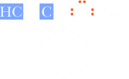A sodium alkoxide (racemic) | HCl⟶ H2O | 1-Ethynylcyclohexanol |
These addition compounds (alkynyl alcohols) contain both a hydroxyl group and a carbon-carbon triple bond, each of which can be further modified. Acid-catalyzed hydration (Section 7.7B) of 1-ethynylcyclohexanol gives an α-hydroxyketone. Alternatively, hydroboration followed by oxidation with alkaline hydrogen peroxide (Section 7.7A) gives a β-hydroxyaldehyde.
| H2O ⟶ H2SO4, HgSO4 | 1-(1-hydroxycyclohexyl)ethanone An α-hydroxyketone | |
| 1.(sia)2BH ⟶ 2.H2O2, NaOH | 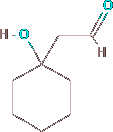 2-(1-Hydroxycyclohexyl)acetaldehyde A β-hydroxyaldehyde |
This example illustrates two of the most valuable reactions of alkynes: (1) addition of the anion of a terminal alkyne to the carbonyl group of an aldehyde or ketone gives an alkynyl alcohol and (2) hydration of a terminal alkyne gives either an aldehyde or ketone depending on the alkyne and the method of hydration.
Addition of Hydrogen cyanide
Hydrogen cyanide, HCN, adds to the carbonyl group of an aldehyde or ketone to form a tetrahedral carbonyl addition compound called a cyanohydrin. For example, HCN adds to acetaldehyde to form acetaldehyde cyanohydrin in 75% yield. We study the naming of compounds containing the nitrile group in Section 18.1E
 | + | HC≡N | ⇌ | CH3HCOH—C≡N 2-Hydroxypropanenitrile (Acetaldehyde cyanohydrin; produced as a racemic mixture) |
Addition of hydrogen cyanide proceeds by way of cyanide ion. Because HCN is a weak acid, pKa 9.31, the concentration of cyanide ion in aqueous HCN is too low for cyanohydrin formation to proceed at a reasonable rate. For this reason, cyanohydrin formation is generally carried out by dissolving NaCN or KCN in water and adjusting the pH of the solution to approximately 10.0, giving a solution in which HCN and CN− are present in comparable concentrations.
Formation of a Cyanohydrin
Step 1: Make a new bond between a nucleophile and an electrophile. Nucleophilic addition of cyanide ion to the carbonyl carbon gives a tetrahedral carbonyl addition compound.
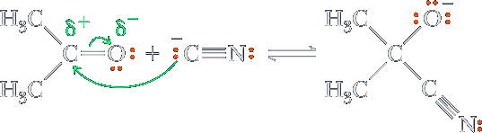Step 2: Add a proton. Proton transfer from HCN gives the cyanohydrin and generates a new cyanide ion.
| (CH3)2C-O−—C≡N | + | HC≡N | ⇌ | + −:C≡N: |
For aldehydes and most aliphatic ketones, the position of equilibrium favors cyanohydrin formation. For many aryl ketones (ketones in which the carbonyl carbon is bonded to a benzene ring) and sterically hindered aliphatic ketones, however, the position of equilibrium favors starting materials; cyanohydrin formation is not a useful reaction for these types of compounds. The following synthesis of ibuprofen, for example, failed because the cyanohydrin was formed only in low yield.
HCN
⇌
(racemic)
Benzaldehyde cyanohydrin (mandelonitrile) provides an interesting example of a chemical defense mechanism in the biological world. This substance is synthesized by millipedes (Apheloria corrigata) and stored in special glands. When a millipede is threatened, the cyanohydrin is released from the storage gland and undergoes enzyme-catalyzed reversal of cyanohydrin formation to produce HCN, which is then released to ward off predators. The quantity of HCN emitted by a single millipede is sufficient to kill a small mouse. Mandelonitrile is also found in bitter almond and peach pits. Its function there is unknown, as is how millipedes survive exposure to hydrogen cyanide.
| 2-hydroxy-2-phenylacetonitrile Benzaldehyde cyanohydrin (Mandelonitrile) |
enzyme catalysis ⟶ |
 Benzaldehyde Benzaldehyde | + | HC≡N |
The value of cyanohydrins as synthetic intermediates lies in the new functional groups into which they can be converted. First, the secondary or tertiary hydroxyl group of the cyanohydrin may undergo acid-catalyzed dehydration to form an unsaturated nitrile. For example, acid-catalyzed dehydration of acetaldehyde cyanohydrin gives acrylonitrile, the monomer from which polyacrylonitrile (Orlon, Table 29.1) is made.
| 2-Hydroxypropanenitrile | acid catalyst ⟶ | CH2=CHC≡N Propenenitrile (Acrylonitrile) | + | H2O |
Second, a nitrile is reduced to a primary amine by hydrogen in the presence of nickel or other transition metal catalyst (Section 18.10C). Catalytic reduction of benzaldehyde cyanohydrin, for example, gives 2-amino-1-phenylethanol.
| Benzaldehyde | + | 2H2 | Ni ⟶ |  2-Amino-1-phenylethanol |
As we shall see in Section 18.4E, hydrolysis of a nitrile in the presence of an acid catalyst gives a carboxylic acid. Thus, even though nitriles are little used themselves, they are valuable intermediates for the synthesis of other functional groups.